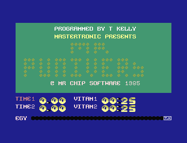
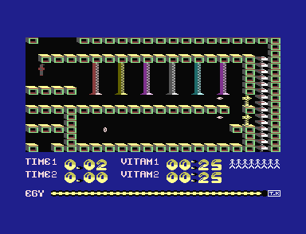

<meta charset="utf-8">
<meta name="viewport" content="width=device-width, initial-scale=1">
<title>Mr Puniverse</title>
<link rel="preconnect" href="https://fonts.googleapis.com">
<link rel="stylesheet" href="https://fonts.googleapis.com/css2?family=Lato:wght@400;700;900&family=IBM+Plex+Mono:wght@400;500&display=swap">
<style>
:root{
  --bg:#23262d; --paper:#e9e7e1; --surface:#ffffff; --surface-2:#f1efea; --line:#d5d3cc; --line-soft:#e0ded8;
  --ink:#2f3136; --ink-soft:#55585f; --ink-mute:#80838a;
  --link:#1f5fa8; --link-hover:#154480; --accent:#1f5fa8;
  --amber:#c25a00; --cyan:#1f5fa8; --coral:#d04a3a; --green:#2a8a4a; --violet:#4a5bd6; --hl:#fff0c2;
  --chip:#2f3136; --chip-ink:#ffffff;
  --c64blue:#40318d; --c64grey:#686868;
  --fd:'Lato',system-ui,sans-serif; --fb:'Lato',system-ui,sans-serif; --fm:'IBM Plex Mono',ui-monospace,Menlo,monospace;
  --col:1080px; --gx:68px; --fs:17px; --lh:1.6; --hw:900; --h1:46px; --h2:26px; --sy:48px; --pp:26px; --r:10px;
  --plate-shadow:0 1px 2px rgba(0,0,0,.05),0 4px 14px rgba(0,0,0,.05);
}
*{box-sizing:border-box}
html{background:var(--bg);min-height:100%}
body{background:var(--paper);color:var(--ink);font-family:var(--fb);font-size:var(--fs);line-height:var(--lh);max-width:var(--col);margin:0 auto;min-height:100vh;padding:0 0 4rem}
h1,h2,h3{font-weight:var(--hw);letter-spacing:-.01em;text-wrap:balance;color:var(--ink);margin:0}
.wrap{padding:0 var(--gx)}
.hero{padding:48px var(--gx) 8px;text-align:left}
.eyebrow{font-family:var(--fm);font-size:12px;letter-spacing:.08em;text-transform:uppercase;color:var(--ink-mute);margin:0 0 10px}
.hero h1{font-size:var(--h1);line-height:1.15;letter-spacing:-.02em;margin:0 0 14px}
.hero .sub{margin:0 0 .6em;color:var(--ink-soft)}
section{padding:var(--sy) 0 24px}
section:last-of-type{border-bottom:none}
.fig{font-family:var(--fm);font-size:12px;letter-spacing:.08em;text-transform:uppercase;color:var(--ink-mute);margin:0 0 10px}
h2.t{font-size:var(--h2);margin-bottom:12px}
.lede{color:var(--ink-soft);margin:0 0 30px}
.plate{background:var(--surface);border:1px solid var(--line);border-radius:var(--r);padding:var(--pp);box-shadow:var(--plate-shadow)}
.cap{font-size:14px;color:var(--ink-mute);margin-top:14px;line-height:1.55}
.cap b{color:var(--ink);font-weight:700}
code{font-family:var(--fm);font-size:.82em;background:var(--chip);color:var(--chip-ink);border-radius:4px;padding:2px 6px;white-space:nowrap}

.pu-pair{display:grid;grid-template-columns:1fr 1fr;gap:18px;align-items:start}
.pu-pair img{width:100%;display:block;border-radius:4px;image-rendering:pixelated;background:#000}
.pu-bar{display:flex;flex-wrap:wrap;gap:8px;align-items:center;margin:0 0 12px;font-size:14px}
.pu-bar button,.pu-table button{font:inherit;font-size:13px;padding:5px 11px;border:1px solid var(--line);background:var(--surface-2);color:var(--ink);border-radius:6px;cursor:pointer;touch-action:manipulation;user-select:none;white-space:nowrap}
.pu-bar button:hover,.pu-table button:hover{border-color:var(--ink-mute)}
.pu-bar button.on{background:var(--ink);color:#fff;border-color:var(--ink)}
.pu-bar label{display:flex;gap:6px;align-items:center;color:var(--ink-soft)}
.pu-screen{width:100%;max-width:640px;display:block;image-rendering:pixelated;background:#000;margin:0 auto;border-radius:4px}
.pu-wrapf{position:relative;max-width:640px;margin:0 auto}
.pu-mark{position:absolute;pointer-events:none}
.pu-line{left:0;right:0;border-top:2px dashed #ffd23f}
.pu-line span{position:absolute;right:4px;top:2px;font-family:var(--fm);font-size:11px;color:#ffd23f;background:rgba(0,0,0,.65);padding:0 4px;border-radius:3px}
.pu-box{border:2px solid #ffd23f;border-radius:2px}
.pu-exit{border:2px solid #4ad1ff}
.pu-state{font-family:var(--fm);font-size:13px;color:var(--ink-soft);margin:10px 0 0;min-height:1.5em}
.pu-small{display:flex;flex-wrap:wrap;gap:16px;align-items:flex-end}
.pu-small canvas{image-rendering:pixelated;background:#000;border-radius:3px;display:block}
.pu-small figure{margin:0;text-align:center;font-size:12.5px;color:var(--ink-soft);cursor:pointer}
.pu-small figure.on canvas{outline:3px solid #ffd23f;outline-offset:2px}
.pu-table{border-collapse:collapse;font-size:14px;margin:10px 0;width:100%}
.pu-table th,.pu-table td{border-bottom:1px solid var(--line-soft);padding:4px 7px;text-align:left;vertical-align:top}
.pu-table th{font-weight:700;color:var(--ink-soft);font-size:13px}
.pu-table td.n,.pu-table th.n{text-align:right}
.pu-table tr.now td,.pu-table td.now{background:var(--hl)}
.pu-table canvas{image-rendering:pixelated;display:block;border-radius:2px}
.pu-scroll{overflow-x:auto}
.pu-strip{display:block;image-rendering:pixelated;background:#000;border-radius:3px;max-width:100%}
.pu-tune{border-collapse:collapse;font-family:var(--fm);font-size:11.5px;margin:12px 0 0}
.pu-tune td{border:1px solid var(--line-soft);padding:1px 3px;text-align:center;min-width:2.1em;line-height:1.25}
.pu-tune td.drum{background:#f3efe4}
.pu-tune td.now{background:#ffd23f}
.pu-tune td.lab{border:none;color:var(--ink-mute);text-align:right;padding-right:6px}
.pu-need{font-size:14px;color:var(--coral)}
.pu-side{display:grid;grid-template-columns:auto 1fr;gap:22px;align-items:start}
.pu-bytes{font-family:var(--fm);font-size:12.5px;word-break:break-all}
.pu-bytes span{padding:0 1px;border-radius:2px}
@media (max-width:720px){:root{--gx:18px;--h1:36px;--pp:16px}.pu-pair,.pu-side{grid-template-columns:1fr}}
</style>
<!-- tabs -->
<header class="hero">
  <p class="eyebrow">1985 · Mastertronic</p>
  <h1>Mr Puniverse</h1>
  <p class="sub">A weakling searches 25 rooms for 25 vitamins against a 23-minute clock. Everything that moves is a character redrawn in place: the crushers, the shots, the spinning cannon heads and Mr Puniverse himself, whose six characters are rebuilt on every pass of the main loop so that he can stand in front of a ladder.</p>
</header>
<main class="wrap">

<section id="game">
  <p class="fig">01 · The game</p>
  <h2 class="t">Collect a vitamin in every room</h2>
  <p class="lede">A cassette for the 16 KB Commodore 16 and the Plus/4, sold by Mastertronic for £1.99, programmed by Tony Kelly for Mr. Chip Software.</p>
  <div class="pu-pair">
    
    
  </div>
  <p class="cap">The title and room 14, in plus4emu. In room 14 Mr Puniverse is the small brown figure at the top left, under six crushers; two cannons fire along the right-hand wall.</p>
  <p>Mr Puniverse is a weakling, a Wimp in the inlay's words, and the inlay sends him through 25 rooms for the vitamins that keep him alive, one in each room. The rooms are laid out as a map five rooms across and five down, and he walks out of one into the next through the gaps at its edges. He walks, falls and jumps; there is no other way to climb.</p>
  <p>Each room holds dangers: crushers that slide up and down, cannons that fire along the floors, force fields, and a floor that kills when he stands on it. Switches turn some of them off.</p>
  <p>Two things put a limit on his game. The EGY bar under the room drains in most rooms and fills in the others, and when it empties he dies. The TIME clock counts up, and at 4.00 his game is over. He has eight lives, and two players can take turns.</p>
</section>

<section id="music">
  <p class="fig">02 · Music</p>
  <h2 class="t">Music: the title tune plays again at the end</h2>
  <p class="lede">The title screen plays a 15-second tune, over and over, on the title and on the menu. It uses both voices of TED, the chip that makes the C16's picture and its sound. The same tune plays again when a player takes the 25th vitamin.</p>
  <div class="plate">
    <div id="pu-tuneplayer"></div>
    <div class="pu-scroll"><table class="pu-tune" id="pu-tune"></table></div>
    <p class="pu-state" id="pu-tunestate"></p>
    <p class="cap">Played by the game's own routine <code>music_tick</code>, at address <code>$1AF7</code> in memory (a <code>$</code> marks a number written in hexadecimal, base 16). It runs on the page's copy of the C16's processor, a 6502, once a frame (the picture is redrawn about 50 times a second, and each drawing is a frame). It starts from the counters <code>setup_machine</code> leaves, and runs at line 250 of the picture, where the game's interrupt routine <code>irq</code> calls it. Its writes to TED's sound registers, the settings that drive the voices, play through the site's model of TED. Run that way, it makes the same 2,238 writes as the plus4emu emulator's sound log of the title's first 774 frames, with the same values in the same frames. The grid shows <code>tune_voice1</code> above <code>tune_voice2</code>, one column for each step of the tune: a number is a note, · keeps the note sounding and – silences the voice. Shaded steps play the drum. The second tune is <code>old_music_tick</code>, which the game never calls, playing what its tables hold now (<a href="discoveries.html#oldtune">Discoveries</a>).</p>
  </div>
  <p>TED has two voices. Each plays a square wave, a plain buzzing tone, and the second can play noise instead. <code>music_tick</code> runs once a frame. Every six frames it moves on to the next step of the tune, 128 steps in all. At each step it reads one byte, a number from 0 to 255, for each voice. A note number looks up that voice's pitch in two tables, <code>note_freq_lo</code> and <code>note_freq_hi</code>. A 0 keeps the voice playing as it was. A byte with its top bit set, 128 or more, switches the voice off.</p>
  <p>The two voices share TED's one volume setting. A note on voice 1 sets the volume to 8, and each frame takes one off, so every note of the tune dies away over eight frames. Every eighth step, voice 2 stops its note. For the first three frames of that step it plays noise instead, which sounds like a drum on the beat.</p>
</section>

<section id="objects">
  <p class="fig">03 · The objects</p>
  <h2 class="t">Crushers, cannons and force fields are characters redrawn in place</h2>
  <p class="lede">The C16's screen is a grid of characters, small square pictures picked from a set of 256. The C16 has no sprites, the moving pictures that other machines' hardware draws over the screen, so everything that moves is drawn into the grid as characters. Pick a room and watch its objects run.</p>
  <div class="plate">
    <div class="pu-bar">
      <div class="pick"><a class="step" id="pu-oprev" aria-label="Previous room">‹</a><select id="pu-oroom" aria-label="Room"></select><a class="step" id="pu-onext" aria-label="Next room">›</a></div>
      <button type="button" id="pu-orun" class="on">Pause</button>
      <button type="button" id="pu-ostep">One pass</button>
    </div>
    <canvas id="pu-objects" class="pu-screen" width="640" height="400" aria-label="The room chosen, its objects moving."></canvas>
    <p class="pu-state" id="pu-ostate"></p>
    <p class="cap">The room is drawn by the game's <code>draw_room</code>. Then three routines of <code>main_loop</code>, the loop the game runs over and over in play, move everything except him: <code>animate_chars</code>, <code>rotate_vitamin_chars</code> and <code>update_objects</code>. They run on the page's 6502 twenty times a second, about as often as the game runs its main loop. A random cannon picks which way to fire from bit 0 of <code>$FF1F</code>, one of TED's registers, which gives the line of the character row that TED is drawing. Here the page picks it at random.</p>
  </div>
  <div class="pu-scroll"><table class="pu-table" style="margin-top:22px" id="pu-otable">
    <tr><th>Object</th><th class="n">In the rooms</th><th class="n">Record</th><th>What it does</th><th>Made by</th></tr>
  </table></div>
  <p>Each room has a record, a block of bytes that describes it (<a href="#rooms">The rooms</a>). The record lists the room's objects, each with its type and its place on the screen, and <code>draw_room_objects</code> makes each one. Each object of a kind that moves gets one of 20 slots in the object tables, which start at <code>$0FF0</code>. On each pass of the main loop, each time round it, <code>update_objects</code> works through the slots in turn. A cannon's shot is the character <code>$C5</code>. Each time the cannon's timer runs out, the shot is put one cell further on and rubbed out behind. A crusher moves a quarter of a cell at a time. Its head has four pictures for each cell, <code>$CD</code> to <code>$D0</code> on the left and <code>$D2</code> to <code>$D5</code> on the right. The game steps through them before it moves the head on to the next cell.</p>
  <p>The scenery moves by changing the pictures of its characters, and the screen itself is left as it is. On each pass, <code>animate_chars</code> does one of three jobs: it spins the random cannon's head, rolls the conveyor belts on by a pixel, or scrolls the force fields up a line. A changed picture changes every cell drawn with that character at once, wherever the cell is on the screen.</p>
</section>

<section id="frame">
  <p class="fig">04 · One frame, rebuilt from memory</p>
  <h2 class="t">The colours change under the room, every frame</h2>
  <p class="lede">The room and the panel below it each have three colours of their own, shared by the whole area. Twice a frame, the game's raster interrupt switches TED's colour registers from one set to the other. A raster interrupt stops the program when TED's beam reaches a chosen line of the picture, and runs a short routine.</p>
  <div class="plate">
    <div class="pu-bar">
      <label><input type="checkbox" id="pu-fline" checked> Mark the change</label>
      <label><input type="checkbox" id="pu-fone"> Draw with one set of colours</label>
      <label><input type="checkbox" id="pu-fblock"> His block</label>
      <label><input type="checkbox" id="pu-fexits"> The exits</label>
    </div>
    <div class="pu-wrapf"><canvas id="pu-frame" class="pu-screen" width="640" height="400"></canvas><div id="pu-fmarks"></div></div>
    <p class="cap" id="pu-fcap">Room 0 at the first pass of a game started with F1, drawn from memory by the site's TED renderer: the screen at <code>$0C00</code>, its colours at <code>$0800</code> and the character set at <code>$3800</code>, all as the game's <code>start_turn</code> leaves them, run on the kit's 6502. The screen's lines 0 to 143 take the room's three colours (<code>$0339</code>-<code>$033B</code>) and lines 144 to 199, from the top of row 18, the panel's. Against plus4emu's picture of the same moment, <b>0 of the 64,000 pixels</b> differ; drawn with one set of colours, 38,408 do.</p>
  </div>
  <p>The screen uses TED's multicolour text mode. It has 40 columns and 25 rows of characters, picked from a set of 256 at <code>$3800</code>. The game brings that set with it and points TED at it (<code>setup_machine</code>). In a multicolour character, each byte of the picture is a row four pixels across, two bits to a pixel. A cell is multicolour when its colour byte has bit 3 set. A pixel's two bits make one of four values. One value picks the cell's own colour, from the colour memory at <code>$0800</code>. The other three pick from three colours that the whole screen shares, held in TED's registers <code>$FF15</code> to <code>$FF17</code>.</p>
  <p>The play area is rows 0 to 17, and the panel is rows 19 to 24. Every room's record gives black, a grey and a dark red for its three shared colours (<code>$00</code>, <code>$31</code> and <code>$32</code>). The panel uses dark blue, a light yellow and black (<code>$06</code>, <code>$77</code> and <code>$F0</code>). <code>irq</code>, the game's interrupt routine, sets the raster interrupt for TED's line 146. That is line 142 of the screen, since TED counts its lines from four lines above the screen's top. At line 146, <code>irq</code> writes the panel's colours. They take hold two lines later, at the top of row 18, the blank row between the room and the panel. Then <code>irq</code> sets the next interrupt for line 250, below the screen. There it writes the room's colours, ready for the top of the next frame.</p>
</section>

<section id="him">
  <p class="fig">05 · Mr Puniverse</p>
  <h2 class="t">Mr Puniverse is six characters, redrawn on every pass</h2>
  <p class="lede">He moves a pixel at a time inside a block two characters wide and three high. The six characters of the block are used for nothing else. The game draws him into them, over a copy of whatever scenery is behind him.</p>
  <div class="plate">
    <div class="pu-small" id="pu-frames"></div>
    <div class="pu-bar" style="margin-top:16px">
      <label>Height in the block <input type="range" id="pu-hy" min="0" max="8" value="6" style="width:150px"></label>
      <label>Behind him <select id="pu-hbg"></select></label>
    </div>
    <div class="pu-side">
      <canvas id="pu-block" class="pu-strip" width="128" height="192" aria-label="His block, the six characters as merge_player draws them, eight times their size."></canvas>
      <div>
        <p class="pu-state" id="pu-hstate" style="margin-top:0"></p>
        <p class="cap">His eight poses are <code>player_frames</code> (<code>$3A68</code>), 32 bytes each. The block is the game's <code>copy_under_glyphs</code> and <code>merge_player</code> run on the kit's 6502, with the scenery chosen in <code>under_player</code> (<code>$0333</code>-<code>$0338</code>), then drawn as <code>draw_player</code> puts characters <code>$78</code>-<code>$7D</code> on the screen, in room 0's colours.</p>
      </div>
    </div>
  </div>
  <p>The block's place is kept as a screen address, where in the screen's memory the block starts, in two bytes at <code>$3F</code> and <code>$40</code>. Inside the block, <code>player_x</code> (<code>$41</code>) picks one of his eight poses. Four face right and four face left, and each is a multicolour pixel further across than the one before. Walking right, he steps through the four poses, one each pass. After the fourth, the block moves a column and the poses start again. The block is 24 lines high, and <code>player_y</code> (<code>$42</code>) is the line where the figure's 16 lines begin. A fall or a jump moves him two lines a pass, and after four passes the block moves a row.</p>
  <p>The game keeps the six characters behind the block in <code>under_player</code>. Each pass, <code>copy_under_glyphs</code> copies their pictures into a buffer, a scratch area of two columns of 24 lines at <code>$3FD0</code>. <code>merge_player</code> draws his pose over them a pixel at a time. Where the pose has a pixel of 0, the scenery shows through. <code>merge_player</code> then copies the result into characters <code>$78</code> to <code>$7D</code>. The block's cells keep the colours the room gave them, so Mr Puniverse takes the colour of whatever he stands in front of.</p>
</section>

<section id="feet">
  <p class="fig">06 · Moving</p>
  <h2 class="t">The character under his feet decides what happens</h2>
  <p class="lede">Each pass, the game looks at the character below the bottom of his block. Solid ground holds him, a ladder holds him, a conveyor carries him and the deadly floor kills him. Anything else lets him fall.</p>
  <div class="plate">
    <div class="pu-scroll"><table class="pu-table" id="pu-chars">
      <tr><th>Characters</th><th></th><th>What they are</th><th>Under his feet</th><th>In the cells that count</th><th>Stop him walking</th></tr>
    </table></div>
    <p class="cap">Each row drawn from the character set at <code>$3800</code> in room 0's colours. The last column is the game's <code>is_solid</code> (<code>$22E6</code>), run on the kit's 6502 on each character: the ones for which it sets the carry, a one-bit flag in the processor, stop him walking into them. The rest follows <code>player_move</code> and <code>player_pass</code> (<a href="#danger">What kills him</a>).</p>
  </div>
  <p><code>player_move</code> reads the character in the row under his block. It looks below his left column when he faces right, and below his right column when he faces left. A standing figure starts at line 6 of the block (<code>player_y</code> 6), with its feet on the block's bottom edge. Anywhere higher, he falls two lines a pass. When he is standing, solid ground and ladders hold him, and fire starts a jump. A jump rises two lines at a time, 16 times, which makes four rows, with a rising note, and then he falls. A jump ends early on a ladder rung, and that is how he climbs a ladder. He cannot climb down one.</p>
  <p>A crumbling floor holds him while it crumbles, one stage a pass, through eight stages from <code>$A8</code> to <code>$B6</code>. Then both its cells go blank and he falls. A conveyor belt carries him left a step each pass, whichever way he faces. The lift character, <code>$BC</code>, would carry him up, but there is no lift in any room (<a href="discoveries.html#lift">Discoveries</a>).</p>
  <p>Walking checks only the middle and bottom cells of the column ahead (<code>move_right</code>, <code>move_left</code>). So he can walk into a corridor two rows high, with his block's top row inside the wall above. Whatever part of the figure lies in that row is drawn over the wall.</p>
</section>

<section id="danger">
  <p class="fig">07 · What kills him</p>
  <h2 class="t">Only two of his six cells can be hit</h2>
  <p class="lede">A shot, a force field or a crusher kills Mr Puniverse only when it reaches one particular cell of his block: the middle cell of the column he stands in, or that column's bottom cell when he is low in the block.</p>
  <div class="plate">
    <div class="pu-bar" id="pu-dbar"></div>
    <canvas id="pu-danger" class="pu-strip" width="192" height="192" style="margin:0 auto" aria-label="His block, with the cells that count marked."></canvas>
    <p class="pu-state" id="pu-dstate"></p>
    <p class="cap">The cells <code>player_pass</code> (<code>$2581</code>) reads from <code>under_player</code>: <code>$0334</code> and <code>$0335</code> facing right, <code>$0337</code> and <code>$0338</code> facing left, the bottom one only with <code>player_y</code> 3 or more. The figure is drawn by the game's <code>merge_player</code> on the kit's 6502.</p>
  </div>
  <p>After he moves, <code>player_pass</code> looks at what lies behind his block. A shot or a crusher that moves into one of his cells writes into <code>under_player</code> instead of onto the screen, and <code>player_pass</code> finds it there. The middle cell of his column always counts. An exit there takes him to the next room, and a shot (<code>$C5</code>), a force field (<code>$C6</code>, <code>$C7</code>) or a crusher (<code>$CC</code> to <code>$D5</code>) kills him. The bottom cell counts only when the figure is low in the block. There, a switch or the vitamin counts too.</p>
  <p>Three more things kill him: standing on the deadly floor (<code>$CA</code>, <code>$CB</code>), an empty EGY bar, and the clock reaching 4.00 (<a href="#energy">The EGY bar and the clock</a>). The D key gives up a life at once.</p>
</section>

<section id="rooms">
  <p class="fig">08 · The rooms</p>
  <h2 class="t">A room's walls fit in 45 bytes</h2>
  <p class="lede">Each room is one record of 62 to 128 bytes. It holds the room's exits, its vitamin, its colours, its walls as a bitmap (a picture with one bit for each pair of cells) and its objects. Every room is drawn on the <a href="levels.html">Maps</a> tab.</p>
  <div class="plate">
    <div class="pu-bar">
      <div class="pick"><a class="step" id="pu-rprev" aria-label="Previous room">‹</a><select id="pu-rroom" aria-label="Room"></select><a class="step" id="pu-rnext" aria-label="Next room">›</a></div>
    </div>
    <div class="pu-side">
      <canvas id="pu-rwalls" class="pu-strip" width="320" height="144" aria-label="The room's wall bitmap: one square for each bit."></canvas>
      <div class="pu-scroll"><table class="pu-table" id="pu-rtable"></table></div>
    </div>
    <p class="cap">The record read as <code>draw_room</code> (<code>$2868</code>) and <code>draw_room_objects</code> (<code>$2999</code>) read it, from <code>room_ptr_lo</code> and <code>room_ptr_hi</code>. On the left, the 45 bytes of walls, one square for each bit, a set bit in the room's wall colour; under it, the room as <code>draw_room</code> draws it.</p>
    <canvas id="pu-rroomcv" class="pu-screen" width="640" height="288" style="margin-top:14px" aria-label="The room as draw_room draws it."></canvas>
  </div>
  <p>The walls are 45 bytes, which is 360 bits, read from the top left a row at a time. Each bit stands for two cells. A set bit (a 1) draws the room's wall character, with the character whose code is 4 higher beside it. A clear bit (a 0) draws two blanks. That makes 18 rows of 40 cells, the whole play area. Then <code>draw_room</code> puts a wall top, <code>$7E</code> beside <code>$7F</code>, on every blank cell above the left half of a wall, in the room's own colour for wall tops. So every ledge gets a lit edge.</p>
  <p>The four exit bytes name the rooms that the top, the bottom, the left and the right edge lead to. <code>draw_room_objects</code> turns every blank cell on an edge of the play area into an exit character. So a room's way out is wherever its walls leave a gap at the edge. An exit byte of 0 sends him to room 0. Most rooms lead to their neighbours on the five-by-five map, but four rooms have exits that lead off it (<a href="discoveries.html#offmap">Discoveries</a>).</p>
</section>

<section id="energy">
  <p class="fig">09 · The EGY bar and the clock</p>
  <h2 class="t">Each room drains the EGY bar or fills it, at its own rate</h2>
  <p class="lede">The EGY bar, at the foot of the panel, holds 34 cells of four steps each. A room's record sets how many passes of the main loop each step takes, and whether the steps go down or up.</p>
  <div class="plate">
    <div class="pu-bar"><label>Steps used <input type="range" id="pu-egy" min="0" max="136" value="0" style="width:240px"></label></div>
    <canvas id="pu-egybar" class="pu-strip" width="640" height="16" aria-label="The EGY bar."></canvas>
    <p class="pu-state" id="pu-egystate"></p>
    <div class="pu-scroll"><table class="pu-table" id="pu-etable"></table></div>
    <p class="cap">The bar drawn with the game's characters <code>$6D</code> (full) to <code>$71</code> (empty), as <code>energy_tick</code> (<code>$33AB</code>) steps the cell in <code>bar_pos</code>. The rates and modes are the last two bytes of each room's record. The times take 20 passes of the main loop a second. That is about the speed of the loop in the rooms timed in plus4emu, 0.39 to 0.42 passes a frame.</p>
  </div>
  <p>A turn starts with the bar full. <code>refill_energy</code> fills it a step at a time, with a warbling tone, while GET READY shows. <code>energy_tick</code> counts the room's rate down once a pass. Each time the count runs out, the cell that <code>bar_pos</code> points at moves a step. In a room that drains, the cell steps from full towards empty, and then <code>bar_pos</code> moves left. When the leftmost cell empties, he dies. In a room that fills, the cell steps back towards full and <code>bar_pos</code> moves right, but it never fills the last cell (<a href="discoveries.html#refill">Discoveries</a>).</p>
  <p>The TIME clock counts up from 0.00, a step every 71 passes of the main loop, which is about every 3.5 seconds (<code>clock_tick</code>). The clock keeps running between rooms and between turns. When it reaches 4.00, after about 23 minutes of play, his lives are set to 1 and he dies, which ends his game. Each player in a game for two has a clock of his own.</p>
</section>

<section id="controls">
  <p class="fig">10 · Controls</p>
  <h2 class="t">Both players use the joystick in port 2</h2>
  <p class="lede">The menu offers the joystick or the keyboard, for one player or for two. The game reads K and M as up and down and then ignores them.</p>
  <div class="plate">
    <table class="pu-table" style="max-width:640px">
      <tr><th>On the menu</th><th>Players</th><th>Controls</th></tr>
      <tr><td>F1</td><td>one</td><td>the joystick in port 2</td></tr>
      <tr><td>F2</td><td>one</td><td>the keys</td></tr>
      <tr><td>F3</td><td>two, taking turns</td><td>the joystick in port 2</td></tr>
      <tr><td>HELP</td><td>two, taking turns</td><td>the keys</td></tr>
    </table>
    <table class="pu-table" style="max-width:640px;margin-top:16px">
      <tr><th>In play</th><th>Joystick</th><th>Keyboard</th></tr>
      <tr><td>Left, right</td><td>left, right</td><td>Z, X</td></tr>
      <tr><td>Jump</td><td>fire</td><td>SHIFT</td></tr>
      <tr><td>Up, down (unused)</td><td>up, down</td><td>K, M</td></tr>
      <tr><td>Pause, carry on</td><td colspan="2">P</td></tr>
      <tr><td>Give up a life</td><td colspan="2">D</td></tr>
    </table>
    <p class="cap"><code>new_game</code> (<code>$31F5</code>), <code>read_input</code> (<code>$2543</code>), <code>player_pass</code> and <code>pause_check</code>; all tried in plus4emu.</p>
  </div>
  <p><code>read_input</code> builds one byte with a bit for each control. With the joystick, it reads port 2 through TED's keyboard latch, <code>$FF08</code>. The game never reads port 1, and in a game for two both players use port 2. With the keys, it reads the key code at <code>$C6</code>. The C16's ROM, the program built into the machine, leaves that code there each time the interrupt calls the ROM's keyboard scan. The code holds one key at a time, so the game cannot see Z and X held together. SHIFT has a flag of its own, at <code>$0543</code>, so Mr Puniverse can jump while he walks.</p>
  <p>The code turns K and M into up and down bits, the same bits the joystick's up and down give, and the game never reads those bits. P pauses the game. PAUSED shows in red under the room, the sound goes quiet, and the game waits for P again (<code>pause_check</code>).</p>
</section>

<section id="turns">
  <p class="fig">11 · Lives, turns and the end</p>
  <h2 class="t">The 25th vitamin ends the game</h2>
  <p class="lede">The game has one ending. The 25th vitamin plays the title tune, waits for a key, and then runs the death sequence with no lives left.</p>
  <div class="plate">
    <canvas id="pu-vit" class="pu-strip" width="128" height="32" style="margin:0 auto" aria-label="The vitamin turning."></canvas>
    <p class="pu-state" id="pu-vstate" style="text-align:center"></p>
    <p class="cap">The vitamin's four pictures, characters <code>$D7</code> to <code>$DA</code>, turned by the game's <code>rotate_vitamin_chars</code> (<code>$2844</code>) on the kit's 6502, once a pass at 20 passes a second, in room 0's vitamin colour.</p>
  </div>
  <p>Each player starts with eight lives, shown as little men in the panel. A death runs the death sequence (<code>death</code>). The room's background flashes through the colours while a rising noise plays, the EGY bar empties, and a life goes. In a game for two, the other player then takes a turn. Each turn starts in the room the player was in, at the place where he came into it, with the bar full. The clock and the vitamins carry on from where they were.</p>
  <p>A vitamin taken is gone for good for that player. <code>collect_vitamin</code> sets his bit in the room's entry in <code>vitamins_got</code>, and the room is drawn without the vitamin the next time he comes in. The 25th vitamin sets his lives to 1, plays the tune and waits for a key, and the death sequence that follows finds no lives left. In a game for two the other player plays on. With both players out, GAME OVER shows and the title comes back.</p>
</section>

<section id="sound">
  <p class="fig">12 · Sound</p>
  <h2 class="t">Sound: every effect plays on voice 2</h2>
  <p class="lede">With the tune off, the game's effects all play on voice 2: the refill of the EGY bar at the start of a turn, a fall, a jump, and a death.</p>
  <div class="plate">
    <div class="pu-scroll"><table class="pu-table" id="pu-sfx"><tr><th></th><th>Effect</th><th>What TED plays</th><th class="n">Frames</th><th>Made by</th></tr>
      <tr data-k="refill"><td></td><td>the EGY bar refilled</td><td>a warble that jumps between a low tone and a high one at every step of the bar, both creeping up</td><td class="n"></td><td><code>refill_energy</code></td></tr>
      <tr data-k="fall"><td></td><td>a fall</td><td>one high note, held until he lands</td><td class="n"></td><td><code>player_move</code></td></tr>
      <tr data-k="jump"><td></td><td>a jump</td><td>a note that sweeps up as he rises and back down as he comes down</td><td class="n"></td><td><code>player_move</code></td></tr>
      <tr data-k="death"><td></td><td>a death</td><td>noise rising in pitch while the room flashes, then fading out</td><td class="n"></td><td><code>death</code></td></tr></table></div>
    <div id="pu-sfxroll"></div>
    <p class="cap">Each effect as the game makes it, recorded on the kit's model of the C16 (<code>kit/c16/machine.js</code>) running the game's code from the listing, in room 0 at the start of a game: the refill as the first turn starts, the fall that follows, a jump from the floor, and the D key. plus4emu's sound log of the same steps has the same writes with the same values, each within a fifth of a frame. They play through the site's model of TED.</p>
  </div>
  <p>The effects write TED's registers straight from the code that causes them. <code>voice2_on</code> and <code>voice2_off</code> switch voice 2 on and off, and the rest of the code sets its pitch in <code>$FF0F</code> and <code>$FF10</code>. The tune is off in play. <code>start_turn</code> clears <code>music_on</code>, so the interrupt stops calling <code>music_tick</code>, and the effects have voice 2 to themselves. Voice 1 is silent in play. <code>voice1_on_unused</code> and <code>voice1_off_unused</code>, which would switch it on and off, are never called.</p>
</section>

</main>
<footer style="margin:16px 0 0;padding:22px var(--gx) 0;border-top:1px solid #e0ded8;font-family:'IBM Plex Mono',ui-monospace,Menlo,monospace;font-size:12px;color:#80838a"><a href="https://github.com/gamesexplained/gamesexplained" style="color:#1f5fa8;text-decoration:none">GitHub</a> · <a href="https://discord.gg/3V9GWyRDWV" style="color:#1f5fa8;text-decoration:none">Discord</a><br>© Games Explained contributors. Write-ups, facts and symbol maps are available under <a href="https://creativecommons.org/licenses/by-sa/4.0/" style="color:#1f5fa8;text-decoration:none">CC BY-SA 4.0</a>; code under <a href="https://opensource.org/licenses/MIT" style="color:#1f5fa8;text-decoration:none">MIT</a></footer>
<script type="application/json" id="puni-sounds">{"refill":{"clock":1773447,"frame":35568,"start":0,"end":3165552,"w":[12946,17,15,41,17,47,12,16,3,11,15,0,19105,15,129,24273,15,2,14924,15,131,25356,15,4,17400,15,133,21944,15,6,20784,15,135,18335,15,8,24941,15,137,15078,15,10,24543,15,139,18185,15,12,21159,15,141,21597,15,14,17526,15,143,25430,15,16,15399,15,145,23734,15,18,18853,15,147,20477,15,20,22953,15,149,16180,15,22,25429,15,151,16043,15,24,23092,15,153,19664,15,26,19666,15,155,23736,15,28,15400,15,157,25429,15,30,16852,15,159,22478,15,32,20277,15,161,18856,15,34,24406,15,163,15080,15,36,25076,15,165,17680,15,38,21650,15,167,20922,15,40,18216,15,169,25214,15,42,14924,15,171,24410,15,44,18346,15,173,20998,15,46,21730,15,175,17389,15,48,25443,15,177,15527,15,50,23597,15,179,19142,15,52,20202,15,181,23072,15,54,16047,15,183,25429,15,56,16360,15,185,22773,15,58,19878,15,187,19450,15,60,23897,15,189,15240,15,62,25430,15,191,16989,15,64,22355,15,193,20398,15,66,18721,15,195,24693,15,68,14947,15,197,24922,15,70,17811,15,199,21519,15,72,21237,15,201,17898,15,74,25348,15,203,15080,15,76,24137,15,205,18619,15,78,20711,15,207,22544,15,80,16589,15,209,25429,15,82,15664,15,211,23455,15,84,19298,15,213,20046,15,86,23364,15,215,15760,15,88,25443,15,217,16477,15,90,22642,15,219,20086,15,92,19258,15,221,24102,15,94,15017,15,223,25429,15,96,17304,15,225,22040,15,98,20688,15,227,18436,15,100,24848,15,229,15070,15,102,24644,15,231,17944,15,104,21400,15,233,21356,15,106,17763,15,235,25429,15,108,15162,15,237,23976,15,110,18752,15,239,20578,15,112,22852,15,241,16281,15,114,25429,15,243,15942,15,116,23191,15,245,19565,15,118,19765,15,247,23497,15,120,15640,15,249,25430,15,122,16759,15,251,22360,15,124,20247,15,253,19097,15,126,24305,15,255,14924,15,128,25333,15,1,17423,15,130,21907,15,3,20821,15,132,18314,15,5,25116,15,134,14924,15,7,24511,15,136,52,17,15]},"fall":{"clock":1773447,"frame":35568,"start":0,"end":391248,"w":[16226,17,47,24,15,200,12,16,3,24,15,192]},"jump":{"clock":1773447,"frame":35568,"start":0,"end":3983616,"w":[5594,17,15,66,16,3,12,15,100,24,17,47,106124,15,108,103196,15,116,92750,15,124,82150,15,132,90708,15,140,84325,15,148,88813,15,156,86017,15,164,86031,15,172,90057,15,180,82303,15,188,92376,15,196,82502,15,204,90869,15,212,83920,15,220,88705,15,228,86407,15,219,85919,15,210,89916,15,201,82964,15,192,92202,15,183,82245,15,174,91808,15,165,83170,15,156,90651,15,147,84778,15,138,87161,15,129,88529,15,120,84278,15,111,112,17,15,264432,17,15,83087,17,15,91109,17,15,83994,17,15,86501,17,15,89051,17,15,83779,17,15,90938,17,15,82269,17,15,91837,17,15]},"death":{"clock":1773447,"frame":35568,"start":0,"end":10812672,"w":[32944,17,15,106258,17,79,16,15,144,6,16,3,27965,15,145,22805,15,146,21137,15,147,26720,15,148,19045,15,149,22689,15,150,25895,15,151,17544,15,152,25271,15,153,22157,15,154,19604,15,155,26725,15,156,20075,15,157,21659,15,158,26925,15,159,17790,15,160,24309,15,161,23880,15,162,18271,15,163,26385,15,164,21525,15,165,20210,15,166,27005,15,167,19064,15,168,22905,15,169,25288,15,170,18164,15,171,25025,15,172,22883,15,173,18850,15,174,27005,15,175,20425,15,176,21540,15,177,26493,15,178,18245,15,179,23951,15,180,24712,15,181,17151,15,182,26662,15,183,21776,15,184,20190,15,185,26488,15,186,19532,15,187,22669,15,188,26067,15,189,17151,15,190,25521,15,191,22927,15,192,18829,15,193,26488,15,194,20904,15,195,21292,15,196,26774,15,197,17732,15,198,24233,15,199,24997,15,200,17692,15,201,25613,15,202,22371,15,203,19831,15,204,26769,15,205,19212,15,206,22759,15,207,26218,15,208,17783,15,209,24453,15,210,24031,15,211,17905,15,212,26568,15,213,20250,15,214,21714,15,215,26721,15,216,18314,15,217,23423,15,218,25309,15,219,17550,15,220,25901,15,221,21611,15,222,20405,15,223,26725,15,224,19708,15,225,22025,15,226,26705,15,227,17544,15,228,24723,15,229,22791,15,230,18962,15,231,26722,15,232,21074,15,233,20663,15,234,27001,15,235,18606,15,236,23363,15,237,24835,15,238,18162,15,239,25535,15,240,22463,15,241,19271,15,242,27006,15,243,20007,15,244,21959,15,245,26229,15,246,18178,15,247,24279,15,248,24303,15,249,17225,15,250,27006,15,251,21365,15,252,20601,15,253,1086,15,160,11057,17,78,521250,17,77,526013,17,76,520735,17,75,519763,17,74,526013,17,73,522294,17,72,518796,17,71,525632,17,70,524318,17,69,518190,17,68,524008,17,67,525786,17,66,518206,17,65,522519,17,64,525991,17,15]}}</script>
<script src="../../lib/c16.js"></script>
<script src="../../lib/cpu6502.js"></script>
<script src="reference/puni.js"></script>
<script src="../../lib/ted-sound.js"></script>
<script>
(function () {
  const $ = id => document.getElementById(id);
  if (!window.C16 || !window.C64Cpu || !window.Puni || !window.TEDSound) {
    for (const id of ['pu-tuneplayer', 'pu-objects', 'pu-frame', 'pu-frames', 'pu-chars', 'pu-danger', 'pu-rwalls', 'pu-egybar', 'pu-vit', 'pu-sfxroll']) {
      const el = $(id); if (!el) continue;
      const p = document.createElement('p'); p.className = 'pu-need';
      p.textContent = 'This needs the site\'s scripts (lib/c16.js, lib/cpu6502.js, lib/ted-sound.js): open the page from the built site.';
      el.replaceWith(p);
    }
    return;
  }
  const hex = (n, w = 2) => '$' + n.toString(16).toUpperCase().padStart(w, '0');
  const PASS = 1000 / 20;                                   // 20 passes of the main loop a second
  function pick(prev, sel, next, n, label, on) {
    for (let i = 0; i < n; i++) { const o = document.createElement('option'); o.value = i; o.textContent = label(i); sel.appendChild(o); }
    const go = i => { i = Math.max(0, Math.min(n - 1, i)); sel.value = i; prev.classList.toggle('off', i === 0); next.classList.toggle('off', i === n - 1); on(i); };
    prev.onclick = () => go(+sel.value - 1); next.onclick = () => go(+sel.value + 1); sel.onchange = () => go(+sel.value);
    return go;
  }
  const crop = (pic, x, y, w, h) => {
    const px = new Uint8Array(w * h);
    for (let j = 0; j < h; j++) px.set(pic.px.subarray((y + j) * pic.w + x, (y + j) * pic.w + x + w), j * w);
    return { w, h, px };
  };
  // cells drawn on a copy of m: put(col, row) gives [character, colour] for each cell of a w by h
  // block at the screen's top left, in the room's colours
  function cells(m, w, h, put) {
    const s = m.slice();
    s.fill(0xD6, 0x0C00, 0x0FE8); s.fill(0, 0x0800, 0x0BE8);
    for (let r = 0; r < h; r++) for (let c = 0; c < w; c++) {
      const v = put(c, r);
      if (v) { s[0x0C00 + r * 40 + c] = v[0]; s[0x0800 + r * 40 + c] = v[1]; }
    }
    return crop(Puni.picture(s), 0, 0, w * 8, h * 8);
  }
  const roomName = r => `Room ${r} (row ${r / 5 | 0}, column ${r % 5})`;

  C16.load('listing.json').then(L => {
    const base = Puni.fresh(L);
    const first = Puni.start(base.slice());
    const records = Array.from({ length: 25 }, (_, r) => Puni.record(L.ram, r));

    /* Music */
    (function () {
      const T = $('pu-tune'), out = $('pu-tunestate');
      const v1 = [...L.ram.subarray(0x196E, 0x196E + 128)], v2 = [...L.ram.subarray(0x1A27, 0x1A27 + 128)];
      const show = v => v === 0 ? '·' : v & 0x80 ? '–' : v;
      let h = '';
      for (let row = 0; row < 8; row++) {
        for (const [name, v] of [['voice 1', v1], ['voice 2', v2]]) {
          h += `<tr><td class="lab">${name === 'voice 1' ? 'step ' + row * 16 : ''}</td>`;
          for (let i = row * 16; i < row * 16 + 16; i++) h += `<td data-s="${i}" class="${i % 8 === 0 ? 'drum' : ''}">${show(v[i])}</td>`;
          h += '</tr>';
        }
      }
      T.innerHTML = h;
      const steps = [...T.querySelectorAll('td[data-s]')];
      TEDSound.mount($('pu-tuneplayer'), {
        tunes: [{ name: 'The title tune', log: TEDSound.pack(Puni.tune(L)) },
                { name: 'old_music_tick, unused', log: TEDSound.pack(Puni.tune(L, { old: true })) }],
        onTime(t, k) {
          let s = -1;
          if (t !== null && k === 0) { const f = Math.floor(t * 49.86); s = f < 6 ? 255 : Math.floor((f - 6) / 6) % 128; }
          for (const td of steps) td.classList.toggle('now', +td.dataset.s === s);
          out.textContent = t === null || k !== 0 ? '' : s === 255 ? 'Step 255: the first six frames read past both tables (Discoveries)'
            : `Step ${s}: voice 1 ${v1[s] & 0x80 ? 'off' : v1[s] ? 'note ' + v1[s] : 'holds'}, voice 2 ${v2[s] & 0x80 ? 'off' : v2[s] ? 'note ' + v2[s] : 'holds'}${s % 8 === 0 ? ', and the drum' : ''}`;
        },
      });
    })();

    /* The objects */
    (function () {
      const cv = $('pu-objects'), out = $('pu-ostate');
      let run, room = 0, running = true, acc = 0, last = 0;
      const counts = {};
      for (const o of records) for (const ob of o.objects) counts[ob.type] = (counts[ob.type] || 0) + 1;
      const ROWS = [
        [5, 'crusher', 8, 'slides up and down a quarter of a cell a pass, its shaft following', 'make_crusher, update_crusher'],
        [3, 'cannon', 6, 'fires one way along its row, a shot a cell every one to three passes', 'make_cannon, update_cannon'],
        [4, 'random cannon', 6, 'fires left or right at random, its head spinning', 'make_cannon, update_random_cannon'],
        [2, 'force field', 6, 'a column that kills, there while its switch is on', 'make_field, update_field'],
        [1, 'bridge', 5, 'a row of wall, there while its switch is on', 'make_bridge, update_bridge'],
        [8, 'switch', 4, 'turned off by touching its lit half, on by its unlit half', 'make_switch'],
        [7, 'scenery', 6, 'a row of crumbling floor, conveyor or deadly floor, or a ladder', 'make_decor'],
      ];
      $('pu-otable').innerHTML += ROWS.map(([t, n, len, what, by]) => `<tr><td>${n}</td><td class="n">${counts[t]}</td><td class="n">${len} bytes</td><td>${what}</td><td>${by.split(', ').map(x => `<code>${x}</code>`).join(', ')}</td></tr>`).join('');
      let seed = 1;
      const rnd = () => { seed ^= seed << 13; seed >>>= 0; seed ^= seed >>> 17; seed ^= seed << 5; seed >>>= 0; return seed & 7; };
      function start(r) { room = r; run = Puni.Room(Puni.room(base.slice(), r), rnd); draw(); }
      function draw() {
        Puni.draw(cv, crop(Puni.picture(run.m), 0, 0, 320, 144), 2);
        const o = records[room];
        const kinds = {};
        for (const ob of o.objects) kinds[ob.name] = (kinds[ob.name] || 0) + 1;
        const list = Object.entries(kinds).map(([n, k]) => `${k} ${n}${k > 1 ? (n === 'switch' ? 'es' : n === 'scenery' ? '' : 's') : ''}`).join(', ');
        out.textContent = `Pass ${run.passes} · ${list || 'no objects'}`;
      }
      function loop(t) {
        if (running) {
          acc += Math.min(200, t - (last || t));
          let n = 0;
          while (acc >= PASS && n++ < 4) { run.pass(); acc -= PASS; }
          if (n) draw();
        }
        last = t; requestAnimationFrame(loop);
      }
      pick($('pu-oprev'), $('pu-oroom'), $('pu-onext'), 25, roomName, start)(14);
      $('pu-orun').onclick = e => { running = !running; e.target.textContent = running ? 'Pause' : 'Run'; e.target.classList.toggle('on', running); };
      $('pu-ostep').onclick = () => { run.pass(); draw(); };
      requestAnimationFrame(loop);
    })();

    /* One frame, rebuilt from memory */
    (function () {
      const cv = $('pu-frame'), marks = $('pu-fmarks');
      const block = first[0x3F] | first[0x40] << 8;
      const mark = (cls, x, y, w, h, label) => {
        const d = document.createElement('div'); d.className = 'pu-mark ' + cls;
        Object.assign(d.style, { left: x / 320 * 100 + '%', top: y / 200 * 100 + '%', width: w / 320 * 100 + '%', height: h / 200 * 100 + '%' });
        if (label) { const s = document.createElement('span'); s.textContent = label; d.appendChild(s); }
        marks.appendChild(d);
      };
      function draw() {
        Puni.draw(cv, Puni.picture(first, { one: $('pu-fone').checked }), 2);
        marks.innerHTML = '';
        if ($('pu-fline').checked && !$('pu-fone').checked) mark('pu-line', 0, Puni.SPLIT, 320, 0, 'row 18: the panel\'s colours');
        if ($('pu-fblock').checked) { const a = block - 0x0C00; mark('pu-box', a % 40 * 8, (a / 40 | 0) * 8, 16, 24); }
        if ($('pu-fexits').checked) for (let a = 0; a < 720; a++) if (first[0x0C00 + a] >= 0xC1 && first[0x0C00 + a] <= 0xC4) mark('pu-exit', a % 40 * 8, (a / 40 | 0) * 8, 8, 8);
      }
      for (const id of ['pu-fline', 'pu-fone', 'pu-fblock', 'pu-fexits']) $(id).addEventListener('input', draw);
      draw();
    })();

    /* Mr Puniverse */
    (function () {
      const box = $('pu-frames'), cv = $('pu-block'), out = $('pu-hstate'), hy = $('pu-hy'), bg = $('pu-hbg');
      const m = first.slice(), c = Puni.cpuFor(m);
      const colour = m[0x0800 + (first[0x3F] | first[0x40] << 8) - 0x0C00];
      // what stands behind him: the six cells of under_player, left column then right, top to bottom
      const BEHIND = [['nothing', [0xD6, 0xD6, 0xD6, 0xD6, 0xD6, 0xD6]], ['a ladder', [0x80, 0x80, 0x80, 0x84, 0x84, 0x84]],
        ['a wall top', [0xD6, 0xD6, 0x7E, 0xD6, 0xD6, 0x7F]], ['a force field', [0xC6, 0xC6, 0xC6, 0xC7, 0xC7, 0xC7]], ['a conveyor belt', [0xD6, 0xD6, 0xB8, 0xD6, 0xD6, 0xB9]]];
      for (const [i, [name]] of BEHIND.entries()) { const o = document.createElement('option'); o.value = i; o.textContent = name; bg.appendChild(o); }
      let frame = 0;
      // the block as merge_player makes it, for player_x x and player_y y, the scenery k behind
      function merged(x, y, k) {
        m.set(BEHIND[k][1], 0x0333); m[0x41] = x; m[0x42] = y;
        c.call(0x1E1E); c.call(0x1E48);
        return cells(m, 2, 3, (col, row) => [0x78 + col * 3 + row, colour]);
      }
      const figs = [];
      for (let k = 0; k < 8; k++) {
        const f = document.createElement('figure'), fc = document.createElement('canvas');
        Puni.draw(fc, merged(4 * k, 4, 0), 3);
        f.append(fc, document.createTextNode(`player_x ${hex(4 * k)}`));
        f.onclick = () => { frame = k; draw(); };
        box.appendChild(f); figs.push(f);
      }
      function draw() {
        const y = +hy.value, k = +bg.value;
        Puni.draw(cv, merged(4 * frame, y, k), 8);
        const ctx = cv.getContext('2d');
        ctx.strokeStyle = 'rgba(255,210,63,.6)'; ctx.lineWidth = 1;
        for (let i = 1; i < 3; i++) { ctx.beginPath(); ctx.moveTo(0, i * 64 + .5); ctx.lineTo(128, i * 64 + .5); ctx.stroke(); }
        ctx.beginPath(); ctx.moveTo(64.5, 0); ctx.lineTo(64.5, 192); ctx.stroke();
        figs.forEach((f, i) => f.classList.toggle('on', i === frame));
        out.textContent = `Pose ${frame + 1} of 8, facing ${frame < 4 ? 'right' : 'left'}, ${frame % 4} pixel${frame % 4 === 1 ? '' : 's'} across: player_x ${hex(4 * frame)}, player_y ${y}${y === 6 ? ', standing' : ''}`;
      }
      hy.oninput = draw; bg.onchange = draw;
      draw();
    })();

    /* What is under his feet */
    (function () {
      const solid = Puni.solid(first), colour = first[0x0800 + 0x52];
      // [characters shown, what they are, under his feet (player_move), in the cells player_pass reads]
      const ROWS = [
        [[0x88, 0x8C], 'a wall, the room\'s character beside it plus 4', 'holds him', ''],
        [[0x7E, 0x7F], 'a wall top, on the cell above a wall', 'he falls', ''],
        [[0x80, 0x84], 'a ladder', 'holds him, and ends a jump', ''],
        [[0xA0, 0xA1, 0xA8, 0xA9], 'crumbling floor: the top, then the floor', 'the floor crumbles a stage, and holds him', ''],
        [[0xB8, 0xB9, 0xBA, 0xBB], 'a conveyor belt: the top, then the body', 'the body carries him left', ''],
        [[0xC8, 0xC9, 0xCA, 0xCB], 'the deadly floor: the top, then the body', 'the body kills him', ''],
        [[0xBC], 'a lift, which no room has', 'raises him', ''],
        [[0xBD, 0xBE, 0xBF, 0xC0], 'a switch, on and then off', 'he falls', 'the bottom cell: <code>$BE</code> turns it off, <code>$BF</code> on'],
        [[0xD7], 'the vitamin', 'he falls', 'the bottom cell: he takes it'],
        [[0xC5], 'a shot', 'he falls', 'kills him'],
        [[0xC6, 0xC7], 'a force field', 'he falls', 'kills him'],
        [[0xCC, 0xD1, 0xCD, 0xD2], 'a crusher\'s shaft and its head', 'he falls', 'kills him'],
        [[0xC1, 0xC2, 0xC3, 0xC4], 'exits, made of the blanks on the room\'s edges', 'he falls', 'the next room'],
        [[0xD6], 'the blank', 'he falls', ''],
      ];
      const T = $('pu-chars');
      for (const [codes, what, feet, block] of ROWS) {
        const tr = document.createElement('tr'), cvc = document.createElement('canvas');
        Puni.draw(cvc, cells(first, codes.length, 1, i => [codes[i], colour]), 3);
        const stops = codes.filter(k => solid[k]);
        tr.innerHTML = `<td>${codes.map(k => hex(k)).join(' ')}</td><td></td><td>${what}</td><td>${feet}</td><td>${block}</td><td>${stops.length ? stops.map(k => hex(k)).join(' ') : ''}</td>`;
        tr.cells[1].appendChild(cvc);
        T.appendChild(tr);
      }
    })();

    /* What kills him */
    (function () {
      const bar = $('pu-dbar'), cv = $('pu-danger'), out = $('pu-dstate');
      const m = first.slice(), c = Puni.cpuFor(m), colour = m[0x0852];
      let x = 0, y = 6;
      for (const [label, nx, ny] of [['Facing right, standing', 0, 6], ['Facing right, high in the block', 0, 2], ['Facing left, standing', 16, 6], ['Facing left, high', 16, 2]]) {
        const b = document.createElement('button'); b.textContent = label;
        b.onclick = () => { x = nx; y = ny; for (const q of bar.children) q.classList.toggle('on', q === b); draw(); };
        if (nx === 0 && ny === 6) b.classList.add('on');
        bar.appendChild(b);
      }
      function draw() {
        m.fill(0xD6, 0x0333, 0x0339); m[0x41] = x; m[0x42] = y;
        c.call(0x1E1E); c.call(0x1E48);
        Puni.draw(cv, cells(m, 2, 3, (col, row) => [0x78 + col * 3 + row, colour]), 8);
        const ctx = cv.getContext('2d'), col = x < 16 ? 0 : 1;
        ctx.lineWidth = 4;
        ctx.strokeStyle = '#ff5a4a'; ctx.strokeRect(col * 64 + 2, 64 + 2, 60, 60);
        if (y >= 3) ctx.strokeRect(col * 64 + 2, 128 + 2, 60, 60);
        out.textContent = `Counted: the ${col ? 'right' : 'left'} column's middle cell (${hex(col ? 0x0337 : 0x0334, 4)})` + (y >= 3 ? ` and its bottom cell (${hex(col ? 0x0338 : 0x0335, 4)}), with player_y ${y}` : `; with player_y ${y}, below 3, the bottom cell is not`);
      }
      draw();
    })();

    /* The rooms */
    (function () {
      const T = $('pu-rtable'), wc = $('pu-rwalls'), rc = $('pu-rroomcv');
      function show(r) {
        const o = records[r], b = (i, n = 1) => [...L.ram.subarray(o.at + i, o.at + i + n)].map(v => hex(v).slice(1)).join(' ');
        const rows = [
          ['0-3', b(0, 4), 'the rooms the top, bottom, left and right edges lead to: ' + o.exits.join(', ')],
          ['4', b(4), `the vitamin's number, ${o.vitamin.id}`],
          ['5-6', b(5, 2), `the vitamin's place, ${hex(o.vitamin.addr, 4)}: row ${(o.vitamin.addr - 0x0C00) / 40 | 0}, column ${(o.vitamin.addr - 0x0C00) % 40}`],
          ['7', b(7), 'the vitamin\'s colour'],
          ['8', b(8), `the wall character, ${hex(o.wall)} beside ${hex(o.wall + 4)}`],
          ['9', b(9), 'the colour of every cell of the play area'],
          ['10-12', b(10, 3), 'the three shared colours'],
          ['13', b(13), 'the wall tops\' colour'],
          ['14-58', '45 bytes', 'the walls, one bit for two cells, drawn on the left'],
        ];
        let i = 59;
        for (const ob of o.objects) { rows.push([`${i}-${i + ob.bytes.length - 1}`, b(i, ob.bytes.length), `${ob.name} at row ${(ob.addr - 0x0C00) / 40 | 0}, column ${(ob.addr - 0x0C00) % 40}`]); i += ob.bytes.length; }
        rows.push([`${i}`, 'FF', 'the end of the objects']);
        rows.push([`${i + 1}-${i + 2}`, b(i + 1, 2), `the EGY bar: a step every ${o.rate} pass${o.rate > 1 ? 'es' : ''}, ${o.drains ? 'draining' : 'filling'}`]);
        T.innerHTML = '<tr><th>Bytes</th><th>Value</th><th>What</th></tr>' + rows.map(([a, v, w]) => `<tr><td>${a}</td><td class="pu-bytes">${v}</td><td>${w}</td></tr>`).join('');
        // the wall bitmap: a square of 8 by 8 for each bit, 20 bits to a row of 40 cells
        const ctx = wc.getContext('2d');
        ctx.fillStyle = '#000'; ctx.fillRect(0, 0, 320, 144);
        ctx.fillStyle = C16.css(o.colour & 0x77);
        for (let k = 0; k < 360; k++) if (o.walls[k >> 3] & (0x80 >> (k & 7))) ctx.fillRect(k % 20 * 16 + 1, (k / 20 | 0) * 8 + 1, 14, 6);
        Puni.draw(rc, crop(Puni.picture(Puni.room(base.slice(), r)), 0, 0, 320, 144), 2);
      }
      pick($('pu-rprev'), $('pu-rroom'), $('pu-rnext'), 25, roomName, show)(0);
    })();

    /* The EGY bar and the clock */
    (function () {
      const cv = $('pu-egybar'), slide = $('pu-egy'), out = $('pu-egystate');
      const m = first.slice();
      function draw() {
        const k = +slide.value;
        // drained from the right: bar_pos at 33, each cell four steps from $6D to $71
        for (let c = 0; c < 34; c++) { const used = Math.max(0, Math.min(4, k - (33 - c) * 4)); m[0x0FC4 + c] = 0x6D + used; }
        Puni.draw(cv, crop(Puni.picture(m), 0, 192, 320, 8), 2);
        out.textContent = k === 136 ? 'Empty: energy_tick returns the carry set and he dies.' : `${136 - k} of 136 steps left; bar_pos at cell ${33 - Math.floor(k / 4)}`;
      }
      slide.oninput = draw; draw();
      const secs = n => n < 60 ? `${Math.round(n)} s` : `${Math.floor(n / 60)} min ${Math.round(n % 60)} s`;
      let h = '<tr><th>Room</th><th>Mode</th><th class="n">Passes a step</th><th class="n">Full to empty, or empty to full</th></tr>';
      for (const o of records) h += `<tr><td>${o.room}</td><td>${o.drains ? 'drains' : 'fills'}</td><td class="n">${o.rate}</td><td class="n">${secs(136 * o.rate / 20)}</td></tr>`;
      $('pu-etable').innerHTML = h;
    })();

    /* The vitamin */
    (function () {
      const m = first.slice(), c = Puni.cpuFor(m), cv = $('pu-vit'), out = $('pu-vstate');
      const colour = records[0].vitamin.colour;
      let n = 0;
      const draw = () => { Puni.draw(cv, cells(m, 1, 1, () => [0xD7, colour]), 4); out.textContent = `Pass ${n}`; };
      draw();
      setInterval(() => { c.call(0x2844); n++; draw(); }, PASS);
    })();

    /* Sound */
    (function () {
      const S = JSON.parse($('puni-sounds').textContent);
      const T = $('pu-sfx'), rows = [...T.querySelectorAll('tr[data-k]')], names = rows.map(r => r.dataset.k);
      const player = TEDSound.mount($('pu-sfxroll'), {
        tunes: names.map(k => ({ name: k, log: S[k] })), buttons: false,
        onTime(t, k) { rows.forEach((r, i) => r.classList.toggle('now', t !== null && i === k)); },
      });
      rows.forEach((r, i) => {
        r.cells[3].textContent = Math.round(S[names[i]].end / Puni.FRAME);
        const b = document.createElement('button'); b.textContent = '▶ Play'; b.title = 'Play ' + r.cells[1].textContent;
        b.onclick = () => player.play(i);
        r.cells[0].appendChild(b);
      });
    })();
  }).catch(e => { console.error(e); });
})();
</script>
